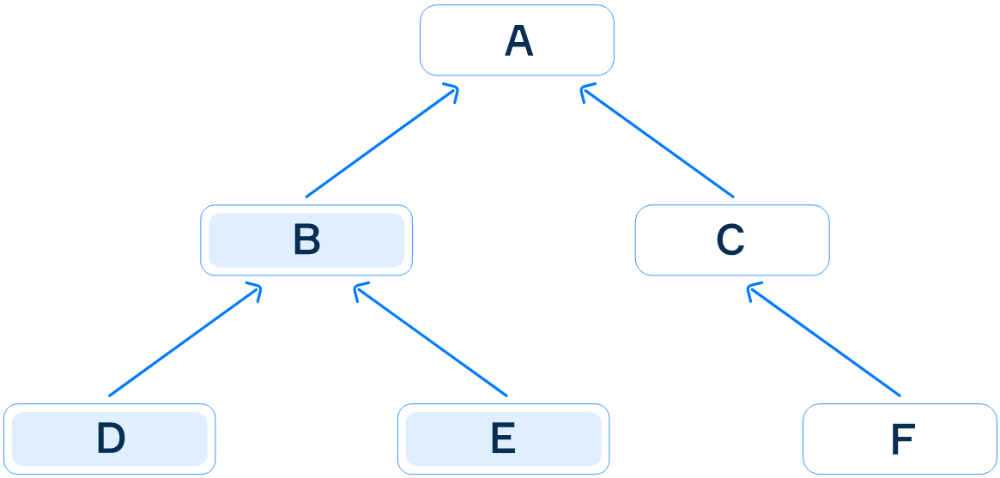

As you already know, method overriding is a mechanism for providing new behavior for the superclass method in a subclass method.
Method overriding follows a set of specific rules. When you override a superclass method, the name and parameters of a subclass method have to be exactly the same as that of the superclass method. The situation with the return type, however, is slightly different. The subclass method can return the same type as the superclass method or a subtype of this return type. This feature is known as the covariant return type.
Covariant return type allows you to narrow (but not widen) the return type of the overridden method, that is to make it more specific.
The following picture demonstrates the covariance with respect to the type B. If the superclass method returns B, then an overriding subclass method can return B, D or E, but not A, C or F.

Covariance with respect to the type B
Let's consider the following code:
class SuperType { }
class SubType extends SuperType { }
class A {
public SuperType getType() {
return new SuperType();
}
}
class B extends A {
@Override
public SubType getType() {
return new SubType();
}
}In this example, the class SubType inherits from SuperType. The method getType
of A returns an instance of SuperType, but the overridden method getType of
the class B (that extends A) returns an instance of SubType. There are no compile-time
errors, this overriding works perfect.
The next example, though, doesn't compile:
class A {
public SubType getType() {
return new SubType();
}
}
class B extends A {
@Override
public SuperType getType() {
return new SuperType();
}
}Here, the method getType of the class A returns an instance of SubType, while
the overridden method getType of the class B returns an instance of SuperType.
It's not a covariant return type so this code does not compile.
Remember, when overriding the return type of a subclass method can be the same type or a subclass of the return type of a superclass method. Covariance is always changing down the hierarchy.